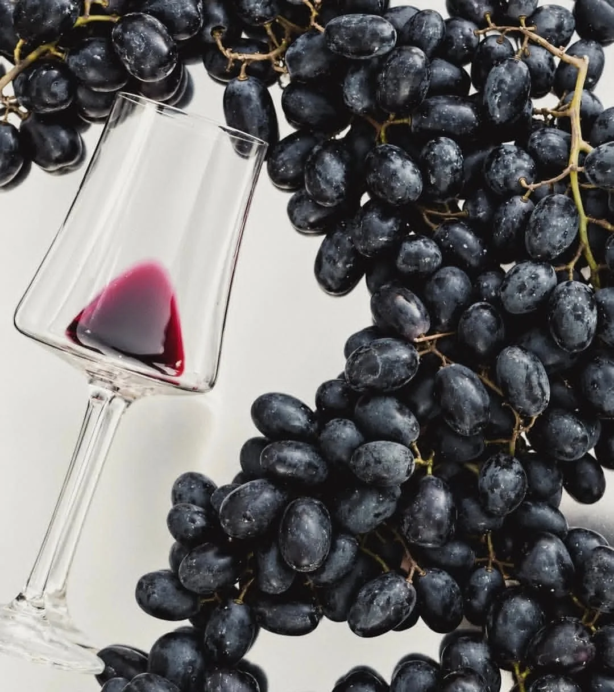
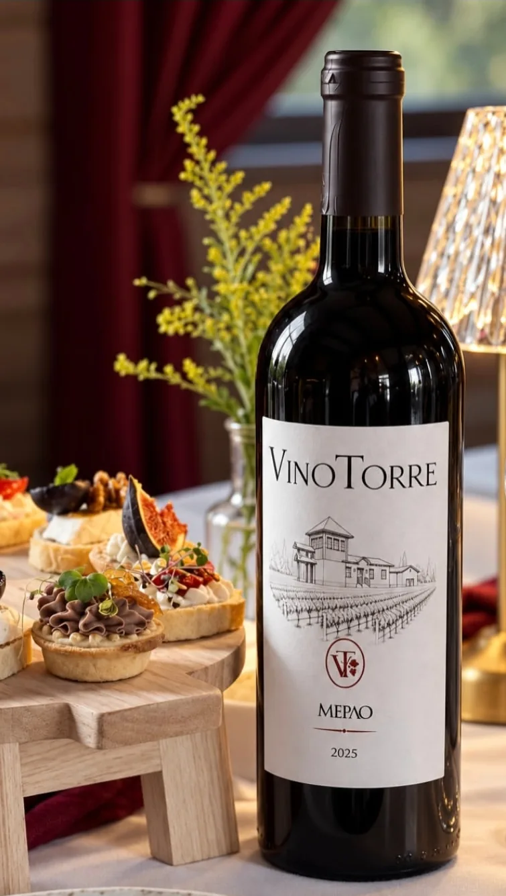
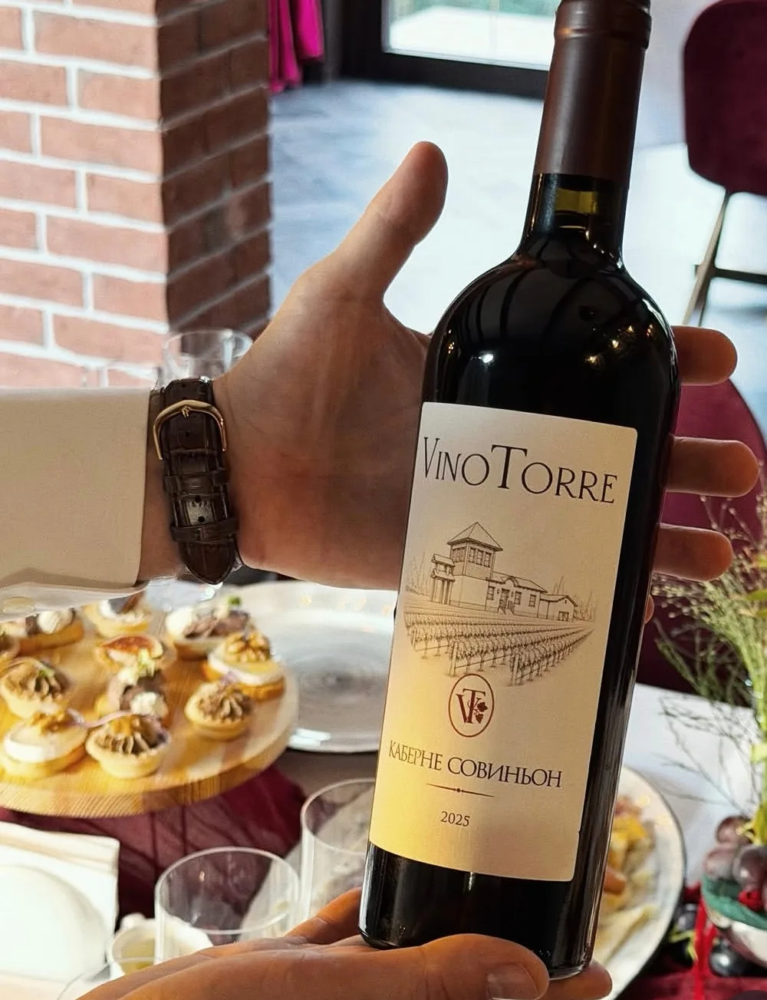

ВИНО. ЗЕМЛЯ. ПРОСТРАНСТВО.
VinoTorreУ вина есть
своё место.
Знакомство начинается с названия.
Продолжается — вниманием к месту.

01
ВНИМАНИЕ К МЕСТУ
Место, к которому
хочется прислушаться.
Вино приглашает замечать детали. Название на этикетке, линию бутылки, оттенок света. Давать знакомству время.
VinoTorre — повод обратиться к простым вещам: земле, пространству и разговору. Здесь начинается знакомство с винодельней во Владимирской слободе.
Увидеть место02
ДЕТАЛИ КОЛЛЕКЦИИ
Вино. Детали.
Впечатления.
Этикетка, цвет, свет.
Фотографии из материалов VinoTorre.


VINOTORRE / КОЛЛЕКЦИЯ
Мерло
2025

VINOTORRE / КОЛЛЕКЦИЯ
Каберне
Совиньон
2025
03
КОЛЛЕКЦИЯ / 2025
Два сорта.
Начало знакомства.
ВЛАДИМИРСКАЯ СЛОБОДА / ВОЛГОГРАДСКАЯ ОБЛАСТЬ
Оставьте время
для знакомства.
Уточнить возможность посещения —
первый шаг к встрече с местом.